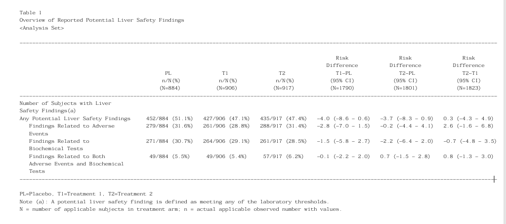

#Table 1
#Install and upload appropriate packages.
library(tidyverse)
library(magrittr)
library(tern)
library(dplyr)
library(rtables)
library(r2rtf)
library(formatters)
#Set seed for reproducibility.
set.seed(619)
#Removed any NA values. Also, added a record sequence number via RUNNUM.
adhy <- df_explicit_na(cadhy)
cadhy2 <- adhy %>% add_column(RUNNUM=runif(nrow(.)))
#Define values of interest in PARAMCD variable.
paramcd_tbili_alt <- c("BLAL", "BGAL", "BA2AL", "BA5AL")
paramcd_tbili_ast <- c("BLAS", "BGAS", "BA2AS", "BA5AS")
param_extra <- c("BL2AL2CB", "BL2AL2CU", "BL2AS2CB", "BL2AS2CU")
#Select laboratory test parameters.
adhy_liver_tot <- cadhy2 %>% filter(SAFFL=="Y", AVISIT %in% c("POST-BASELINE"), PARAMCD %in% c(paramcd_tbili_alt, paramcd_tbili_ast, param_extra), AVAL %in% c(0,1,2,3,4))
#ADaM Programmers should have already included a variable similar to BIOCHEMREL & ADVREL
adhy_liver2 <- cadhy2 %>% mutate(BIOCHEMREL=ifelse(.8>RUNNUM & RUNNUM>.5,"Yes","No")) %>%
mutate(ADVREL=ifelse(.55>RUNNUM & RUNNUM>.25,"Yes","No")) %>% filter(SAFFL=="Y", AVISIT %in% c("POST-BASELINE"), PARAMCD %in% c(paramcd_tbili_alt, paramcd_tbili_ast, param_extra), AVAL %in% c(1,2,3,4))
#Add appropriate labels for final table output.
adhy_liver3 <- adhy_liver2 %>% mutate(FINBOTH=with_label(BIOCHEMREL=="Yes" & ADVREL=="Yes"," Findings Related to Both\n Adverse Events and Biochemical\n Tests"),
FINAEREL=with_label(ADVREL=="Yes"," Findings Related to Adverse\n Events"),
FINBCTEST=with_label(BIOCHEMREL=="Yes"," Findings Related to\n Biochemical Tests"))
#Flag total number of findings without duplicates.
adhy_liver4 <- adhy_liver3 %>% mutate(TOP=case_when(ADVREL=="Yes" & BIOCHEMREL=="No" & FINBOTH=="FALSE"~"Y",
ADVREL=="No" & BIOCHEMREL=="Yes" & FINBOTH=="FALSE"~"Y", .default="N")) %>%
mutate(TABLESEQ=RUNNUM) %>% mutate(FINTOP=with_label(TOP=="Y","Any Potential Liver Safety Findings")) %>% mutate(ROWSPL1=case_when(FINTOP=="FALSE"|FINTOP=="TRUE"~" "))
#Rename treatment arms.
levels(adhy_liver4$ACTARMCD) <- c("T1","PL","T2")
levels(adhy_liver4$ACTARM) <- c("T1\n n/N(%)","PL\n n/N(%)","T2\n n/N(%)")
adhy_liver4$ACTARMCD <- factor(adhy_liver4$ACTARMCD,levels=c("PL","T1","T2"))
aefin_vars <- c("FINBOTH","FINAEREL","FINBCTEST")
#Custom format function
format_frac_perc <- function(x, output=NULL){perc<-round(x[2]*100,1);denom<-(x[1]/(x[2]*100))*100;paste0(x[1],"/",denom," (",perc,"%") )}
#Build table (pseudo-code snippet)
lyt_fin1a <- basic_table(show_colcounts=TRUE) %>% split_rows_by(c("ROWSPL1")) %>% split_cols_by("ACTARMCD")#Download CADHY liver dataset from CDISC library.
library(random.cdisc.data)
cadhy
